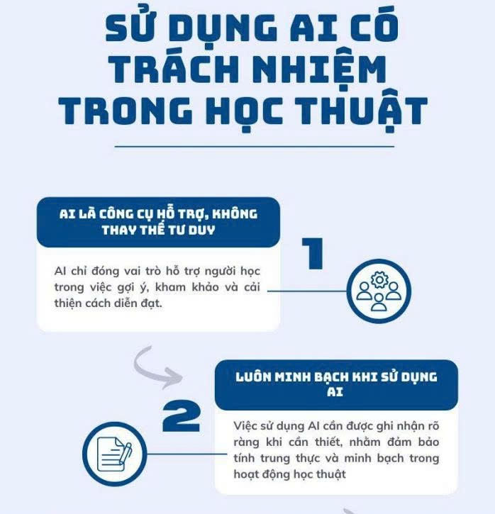

Sử dụng AI có trách nhiệm trong học tập và nghiên cứu
🎯 Mục tiêu bài tập
Phát triển kỹ năng sử dụng AI có trách nhiệm và đạo đức trong học tập và nghiên cứu.
📝 Quá trình thực hiện & Phân tích
=> Em nghiên cứu chính sách của Đại học Quốc gia Hà Nội (VNU) về việc sử dụng AI trong học thuật. Hiện tại VNU chưa có văn bản riêng chỉ dành cho AI, tuy nhiên việc sử dụng AI được đặt trong khung đạo đức học thuật – trung thực trong thi cử và nghiên cứu – phòng chống đạo văn. VNU xem AI là công cụ hỗ trợ, nhưng không được dùng để làm thay tư duy cá nhân hoặc làm sai lệch kết quả đánh giá năng lực của người học.
=> Em chọn nhiệm vụ viết bài luận về “Sử dụng AI có trách nhiệm trong học tập và nghiên cứu”. Trong quá trình làm bài, em sử dụng AI để: gợi ý dàn ý, gợi ý các ý phân tích về chính sách VNU, liệt kê các vấn đề đạo đức, gợi ý bộ nguyên tắc cá nhân. Em đã ghi lại các prompt và mô tả đầu ra của AI, đồng thời chỉnh sửa – viết lại theo ngôn ngữ cá nhân, bổ sung lập luận và phân tích riêng để bài phản ánh tư duy độc lập. Em cũng trích dẫn việc sử dụng AI một cách minh bạch trong quá trình thực hiện.
- Ranh giới hỗ trợ và gian lận: AI chỉ hỗ trợ hợp lý khi dùng để gợi ý, tham khảo, chỉnh diễn đạt; còn dùng AI tạo toàn bộ bài làm và nộp như sản phẩm cá nhân là gian lận học thuật.
- Quyền sở hữu trí tuệ và trích dẫn: AI có thể tổng hợp từ nhiều nguồn nên dễ xảy ra đạo văn không chủ ý, vì vậy người học cần kiểm tra nội dung và trích dẫn đầy đủ.
- Tác động đến học tập: AI giúp tiết kiệm thời gian, nhưng nếu lạm dụng sẽ làm giảm tư duy phản biện và kỹ năng viết – giải quyết vấn đề độc lập.
🛡️ Kết quả: Bộ 6 nguyên tắc cá nhân
1. AI chỉ là công cụ hỗ trợ
Em chỉ dùng AI để gợi ý, tham khảo hoặc hỗ trợ diễn đạt, còn nội dung chính vẫn phải do em tự hiểu và tự làm.
2. Luôn minh bạch khi sử dụng
Nếu bài làm có sự hỗ trợ từ AI, em sẽ ghi rõ mình đã dùng AI ở phần nào và dùng để làm gì.
3. Chỉ sử dụng trong phạm vi cho phép
Tuân thủ các quy định/định hướng của nhà trường và giảng viên, không dùng AI trong những phần bị cấm.
4. Chịu trách nhiệm hoàn toàn
Dù AI có hỗ trợ, em vẫn là người chịu trách nhiệm về độ chính xác và chất lượng của bài làm.
5. Kiểm tra và cá nhân hóa
Kiểm chứng, chỉnh sửa lại theo cách hiểu của mình và bổ sung lập luận để bài có tính cá nhân. Tôn trọng quyền sở hữu trí tuệ.
6. Không lạm dụng để tránh phụ thuộc
Duy trì khả năng tự học, tư duy phản biện và rèn kỹ năng viết, phân tích độc lập.
📸 Minh chứng làm bài
